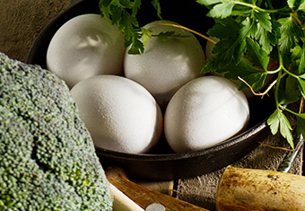
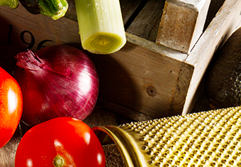
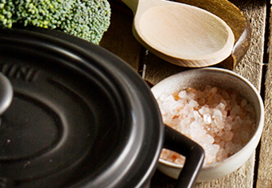
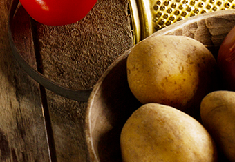
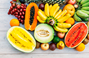

Cook fruits and berries are among the world's most popular health foods. This is not surprising, given that they taste incredible. Fruits are also very easy to incorporate into the diet, because they require little to no preparation.
Fish and other seafoods tend to be very healthy and nutritious. Studies show that people who eat the most foods from the sea (especially fish) tend to live longer and have a lower risk of many diseases, including heart disease, dementia and depression.
Bananas
fruits
Bananas are among the world's best sources of potassium. They are also high in vitamin B6 and fiber. Bananas are ridiculously convenient and portable.